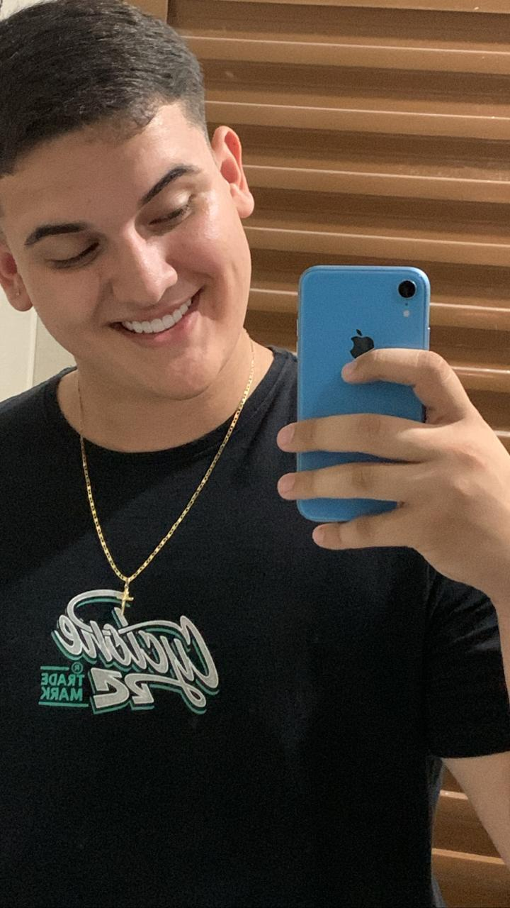

Meu nome é Matheus da Silva Bugatti, atual estudante de Análise e Desenvolvimento de Sistemas. Estou animado para compartilhar minha paixão por resolver problemas por meio da programação e desenvolvimento de sistemas inovadores. Minha abordagem para o aprendizado é caracterizada por uma mentalidade aberta e proativa. Acredito firmemente que a tecnologia é uma ferramenta poderosa para criar soluções impactantes, e estou ansioso para contribuir com projetos inovadores que possam fazer a diferença.
Além disso, estou aberto a novas oportunidades na área de análise e desenvolvimento de sistemas. Seja por meio de estágios, projetos colaborativos ou oportunidades de emprego, estou pronto para aplicar meu conhecimento de forma prática e aprender com profissionais experientes.
Se você procura alguém dedicado, curioso e apaixonado por transformar conceitos em realidade, estou pronto para embarcar em novos desafios e contribuir para o sucesso de sua equipe. Estou ansioso para fazer parte de uma comunidade onde o aprendizado contínuo é valorizado e a inovação é incentivada.
Obrigado pela oportunidade de compartilhar um pouco sobre mim, e estou ansioso para explorar as possibilidades que o futuro reserva na área.
Atenciosamente, Matheus Bugatti.